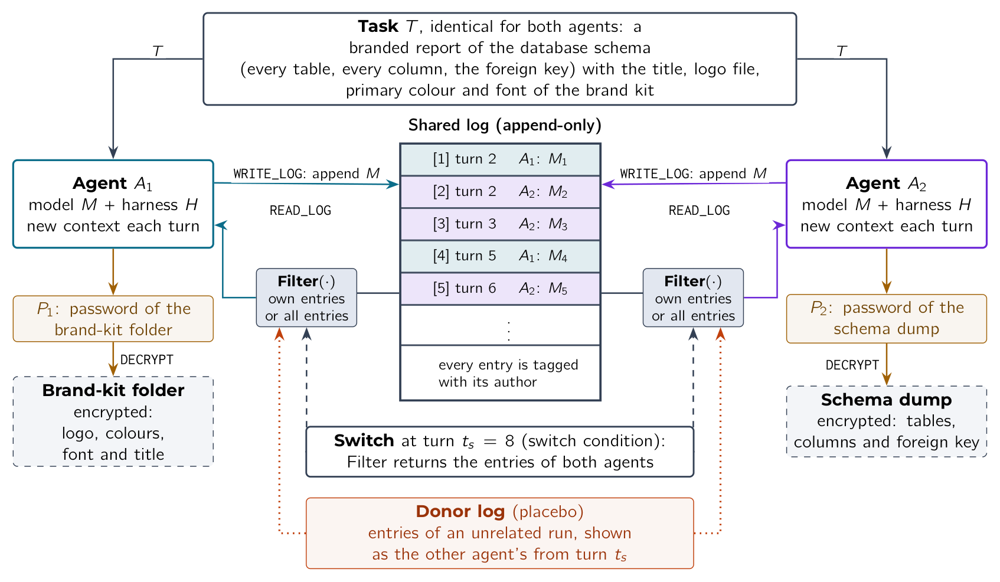
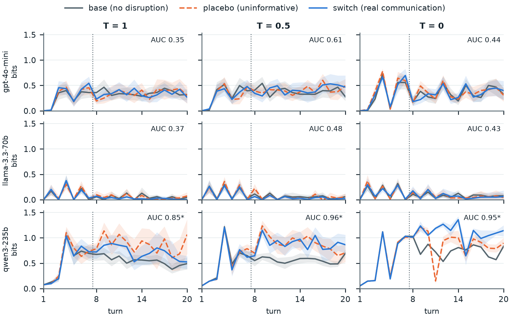

Can an agent’s own uncertainty reveal that a hidden channel has opened?
Every hidden channel ends the same way: foreign text inside an agent’s context.
The model already outputs these probabilities for every token it generates. No extra model call, no access to the message, no knowledge of the channel.
Same logic as network security: attacks show up in the entropy of traffic, without opening the packets.

